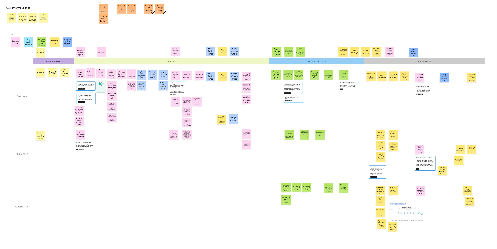
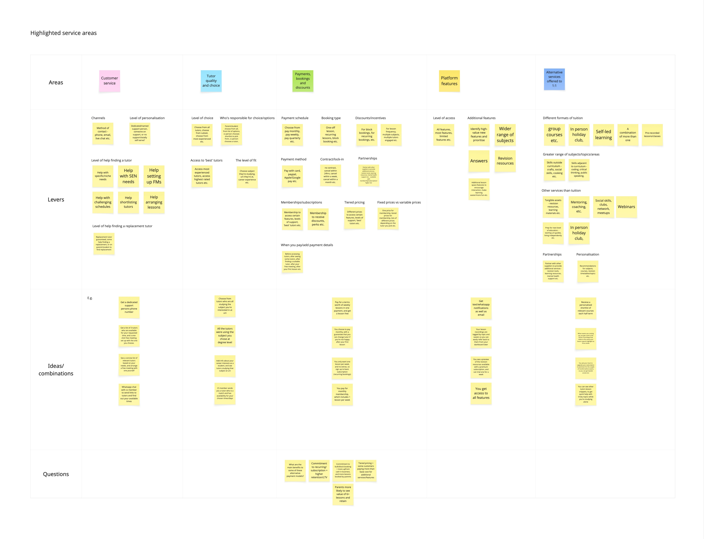
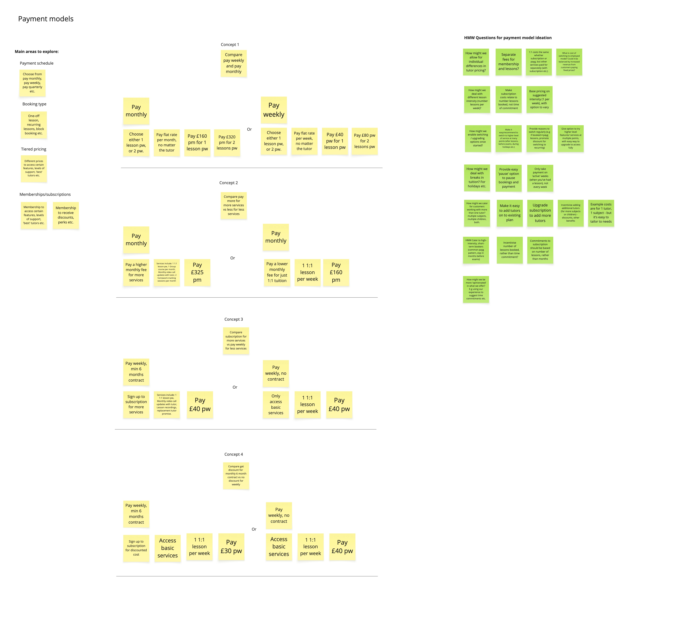
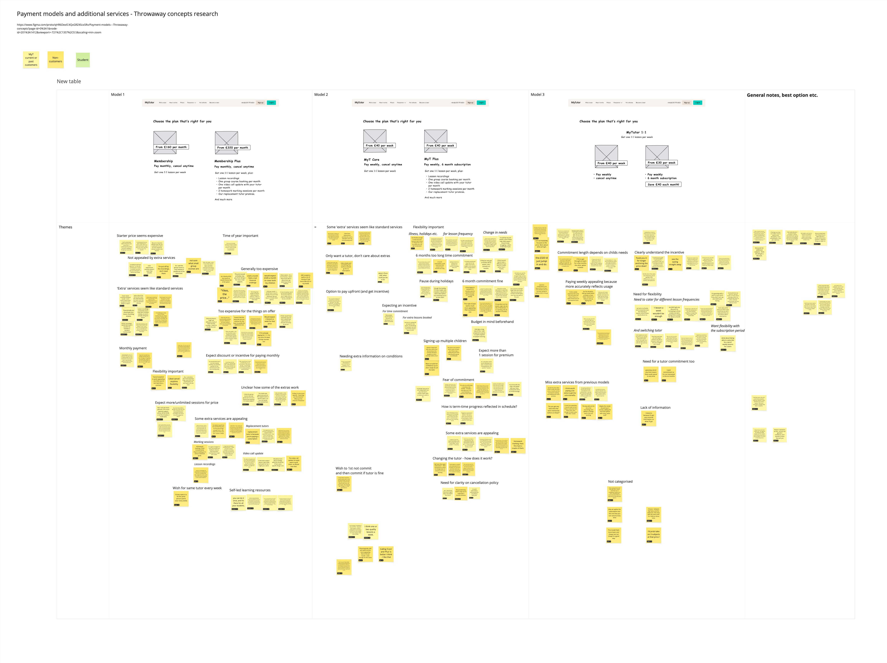
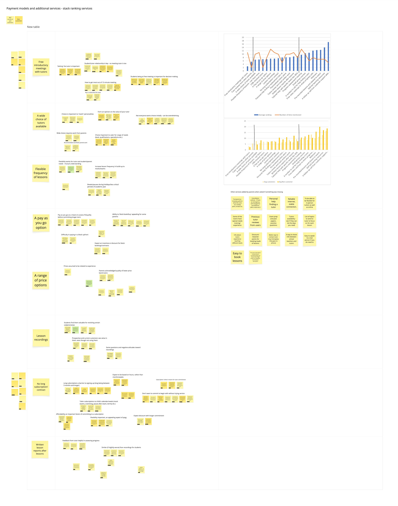

EdtechProductServiceStrategy
MyTutor —
What I did
Concept testing
Discovery
Facilitation
Service design
Strategy
User testing
Team
I led discovery, working with our strategic projects lead, General Manager, and wider group of stakeholders.
Context
MyTutor was on the path to profitability, but was facing issues with the core model that were limiting our ability to achieve sustainable unit economics.
While growth was steady, customer lifetime value was not growing significantly year on year, and we struggled with early churn and retention. We wanted to identify alternative commercial and service models that could serve the business better, while still delivering value to our customers.
Outcome
We identified key customer needs and expectations relating to different payment models, and shaped our model proposition and mechanics based on these insights, successfully launching a subscription-based service in the following months.

I mapped the stages of our service that customers experience, working with colleagues in sales, customer success, and other parts of the business, to identify the journey customers go on throughout their time using MyTutor. I used data from customer interviews, quant data and analytics, and input from team members to highlight where customers had issues, and what we did well. This helped us understand our strengths and where there might be opportunities to either capitalise on them, add to or change our service offering.

I identified 5 main service areas - customer service, tutor quality and choice, payment booking and discounts, platform features, and alternative services beyond 1:1 tutoring. We then identified potential levers for each area, like the level of help we provide to find a tutor, or how frequently payment is made. This helped us explore alternative ideas and ways to both improve our service, and improve commercial results.

Solutions and ideas
We identified a variety of payment model options, as payment emerged as an area that could be particularly commercially impactful. I worked with strategic projects and commercial stakeholders to define and visualise these, to test the models as concepts with customers, and model their potential commercial impact.

Testing & iterating
I used throwaway concept sketches to introduce different propositions to research participants, using them as prompts to explore how they approach and think about budgeting, value, and other aspects of paying for a service. I also ran card sorting exercises to gauge what aspects of a proposition were important, and which less so. We learnt a lot about the perceived value of different aspects of our service and potential propositions, and also what’s important to people when paying for and managing a service like online tutoring.

From this discovery and modelling, we identified some commercial models that could bring increased lifetime revenue, and also learnt which parts of our current and future models were important to customers. A higher-commitment model than pay-as-you-go, like a subscription or membership, balanced with flexibility and some of the optionality we currently provided, seemed to have both commercial potential and customer benefits, and we progressed to testing an experimental funnel that introduced this model to customers. This early discovery helped us build confidence in the potential of a membership model, and also raised issues which we’d need to address, which you can read about here.